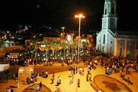
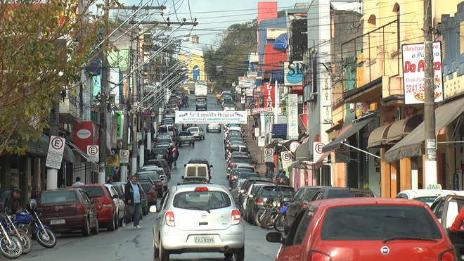
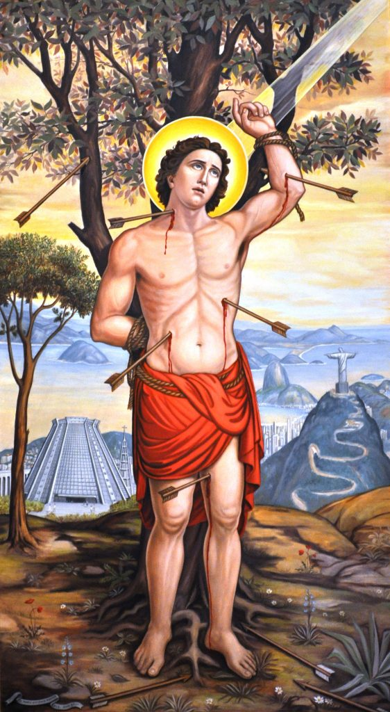

Seja bem-vindo ao nosso Quiz das cidades brasileiras. Nasci e cresci em uma cidade no interior do estado de São Paulo e quero que você descubra de qual cidade eu estou falando!
Não desista! tente novamente
Aqui também tem uma represa muito famosa!
Hum... que tal

Quantos habitantes a minha cidade tem?
A minha cidade foi fundada em:

Na minha cidade, existe uma tradição católica, em que fazem homenagem a um santo. Que santo é esse?
Minha cidade comça com a letra I, qual é a minha cidade?
Parabéns, seja bem vindo em Ibiúna.